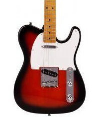
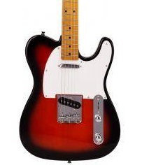

Guitarra electrica telecaster
 

La guitarra Telecaster en colores negro, blanco y rojo es una pieza única diseñada para atraer tanto a músicos como a coleccionistas. Con su característico cuerpo de líneas elegantes y tonos vibrantes, esta guitarra no solo destaca por su apariencia, sino también por su rendimiento excepcional.
- Cuerpo de madera sólida con un acabado brillante en negro, blanco y rojo
- Pastillas single-coil que ofrecen un sonido claro y definido con gran articulación
- Mástil de arce con diapasón de palisandro para una sensación suave y cómoda al tocar
- Puente fijo clásico que garantiza una excelente estabilidad de afinación
- Selector de 3 posiciones para una variedad tonal desde twang brillante hasta cálidos medios